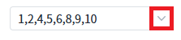
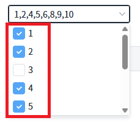
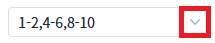
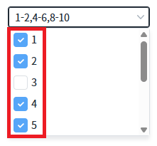

CheckCombobox의 'rangeSeparator' 속성을 사용하여, 연속된 선택 항목을 축약 표시한 예제입니다.
설정에 따른 동작은 아래와 같습니다. - "" : [default] 선택한 항목이 축약되지 않고 모두 표시된다. - "-" : 연속적으로 선택된 항목을 "x-y" 형태로 간단하게 보여주는 기능 목록을 펼쳤을 때의 순서를 기준으로 연속성을 판단한다.
선택된 항목이 전부 표시된 것을 확인하기
연속된 선택 항목이 x-y 형식으로 축약된 것을 확인하기
예제 영역 'rangeSeparator' 기본 설정 값에서 테스트합니다.1
STEP 1: 초기 상태를 확인합니다.
CheckCombobox에 선택되어있는 항목이 전부 표시되어 있는 것을 확인한다.
2
STEP 2: 목록을 확장합니다.
Image 1.브라우저(Chrome) 실행 예시

3
STEP 3: 실행된 결과를 확인합니다.
STEP 1에서 표시된 항목이 전부 체크된 것을 확인한다.
Image 2.브라우저(Chrome) 실행 예시

예제 영역 'rangeSeparator' 설정 값 : '-'에서 테스트합니다.1
STEP 1: 초기 상태를 확인합니다.
CheckCombobox에 선택되어있는 항목 중에서 연속으로 체크된 항목은 "-" 형식으로 축약된 것을 확인한다.
2
STEP 2: 목록을 확장합니다.
Image 3.브라우저(Chrome) 실행 예시

3
STEP 3: 실행된 결과를 확인합니다.
STEP 1에서 표시된 항목이 전부 체크된 것을 확인한다.
Image 4.브라우저(Chrome) 실행 예시

컴포넌트의 속성을 정의합니다.
[필수] rangeSeparator="-"
연속적으로 선택된 값을 "x-y" 형태로 간단하게 보여주는 기능
목록을 펼쳤을 때의 순서를 기준으로 연속성을 판단합니다.
(옵션 설명)
- "" (기본 값) : 체크된 항목이 전부 보이게 된다.
- "-" : 연속적으로 체크된 항목이 x-y 형식으로 축약되어 보여진다.
[선택] separator=","
이 속성이 ","로 지정되어야 항목들을 ','로 구분한다.